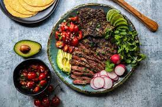

Carne Asada

Description
A family favorite. Carne Asada is a Mexican dish featuring steak that is
marinated in a lime juice and seasoning mixture. In literal translation,
carne asada means "grilled meat", so the steak is traditionally grilled.
Ingredients
- skirt steak
- 1 bunch of cilantro, chopped finely
- 1 tablespoon of minced garlic
- 1 tablespoon of cumin
- 1 teaspoon of salt
- 1 teaspoon of pepper
- a few tablespoons of brown sugar
- juice and zest of one lime
- 3 tablespoons soy sauce or maggi seasoning
- 1/2 cup of olive oil
Steps
- Create the marinade with the ingredients listed above.
- Let the meat marinade a few hours or overnight(preferred).
- When ready, cook the steak on high heat for 4-7 minutes(time depends on
preferred doneness and your stove).